How to get started
Permissions Sets
To use Lursoft Integration, the user must be assigned the permission set ELV2-LURSOFT.
How to set up Lursoft Integration
- Select the Search icon in the top-right corner of the page, enter Lursoft Setup and then select the related link.
- On the Lursoft Setup page, fill in the basic integration settings tab General:
- Enabled - turn on if you start using Lursoft Integration;
- Username - specify the user name received from Lursoft;
- Password - specify the user password received from Lursoft;
- oAuth ID - specify the user oAuth ID received from Lursoft;
- oAuth password - specify the password of the user oAuth ID received from Lursoft;
- Scope - specify the Scope value received from Lursoft;
- Update without confirmation window - turn on if you want to use Lursoft data update without using the user confirmation window;
- Access Token - is assigned and filled in the system automatically after the execution of Lursoft authentication;
- Access Token Date, Time - is assigned and filled in the system automatically after the completion of Lursoft authentication;
- Access Token Expiration - is assigned and filled in the system automatically after performing Lursoft authentication;
- Refresh Token - is assigned and filled in the system automatically after performing Lursoft authentication;
- Refresh Token Date, Time - is assigned and filled in the system automatically after the completion of Lursoft authentication;
- Refresh Token Expiration - specify the value +30D, which is defined in the Lursoft documentation. The validity period of the renewal key is 30 days or 720 hours;
On the Lursoft Setup page, fill in the integration settings on the Lursoft LV tab:
- LV Country code - specify the value LV from the list of countries to make data requests from the Lursoft Latvian register;
- Access key request - specify the link to obtain access to the authorization key;
- Request API - specify the data request link for the partner search by Registration Number;
- Legal Entity Request - indicate the link of the data request for obtaining the legal statement of the partner;
- Public Pers. or Organiz. Req. - indicate the link of the data request for obtaining the statement of the partner as a Public Person or Institution.
On the Lursoft Setup page, fill in the integration settings in the Lursoft LT tab:
- LT Country code - specify the value LT from the list of countries to make data requests from the Lursoft Lithuanian register;
- Legal entity Request LT - indicate the link of the data request for obtaining the legal statement of the partner from the LT register.
On the Lursoft Setup page, fill in the integration settings in the Lursoft EE tab:
- EE Country code - specify the value EE from the list of countries to make data requests from the Lursoft Estonian register;
- Legal entity Request EE - indicate the link of the data request for obtaining the partner's legal statement from the EE register.
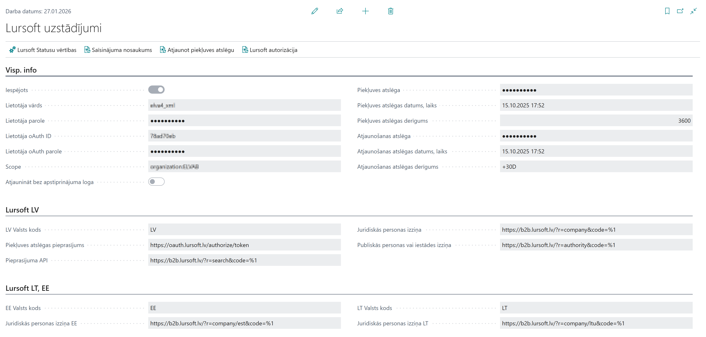
All requests for requests for national (LV, LT and EE) data registers required in the settings can be found in the Lursoft documentation Lursoft.
Lursoft Status Setup
- Press the Search icon in the upper right corner of the page, enter Lursoft status setup and select the appropriate link.
- On the Lursoft status setup page, fill in the settings in the form of a table:
- Lursoft country code - specify the corresponding country code value (LV, LT or EE) for processing the corresponding country data request;
- Lursoft Status Code - specify the corresponding value of Lursoft status for processing the data request of the corresponding country (LV, LT or EE);
- Description - indicate a description or explanation of the Lursoft status value, the field is informative, explains the meaning of the status;
- Customer Blocked value - specify the value for the Status field in the customer's card, which will be applied as a result of the customer's data processing, after receiving the corresponding Lursoft status;
- Vendor Blocked value - specify the value for the Status field on the vendor's card, which will be applied as a result of the vendor's data processing, after receiving the corresponding Lursoft status.
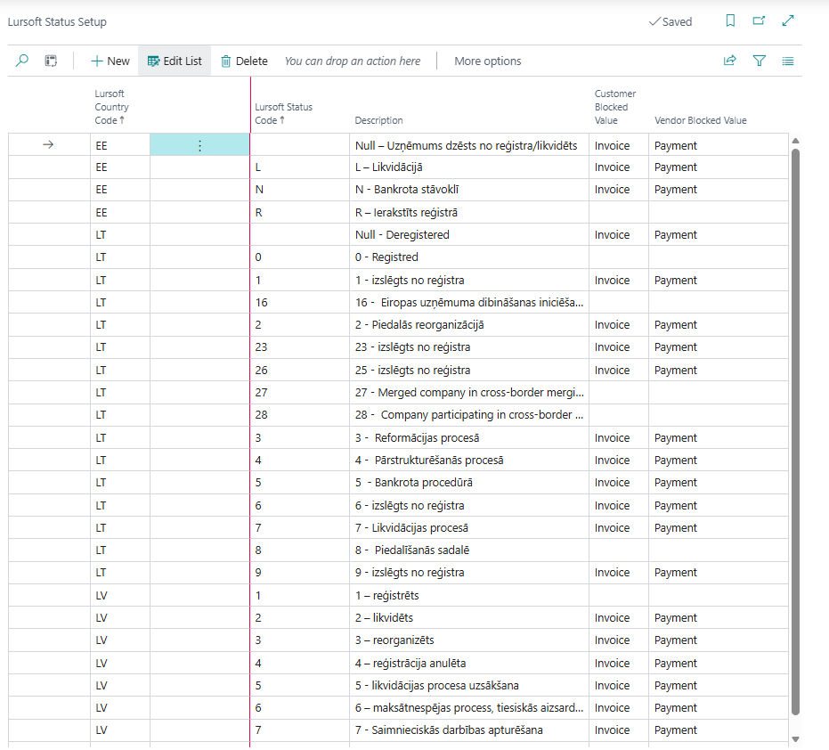
Lursoft Abbreviations
- Press the Search icon in the upper right corner of the page, enter Abbreviations and select the appropriate link or on the Lursoft Setup page choose the Name abbreviations action**.
- Lursoft abbreviations are used to replace too long partner names, abbreviations with generally accepted abbreviations;
- On the Abbreviations page, fill in the settings in the form of a table:
- Abbreviations - specify the appropriate abbreviation value;
- Description - specify the corresponding value of the full text, if found for which the corresponding abbreviation will be applied.
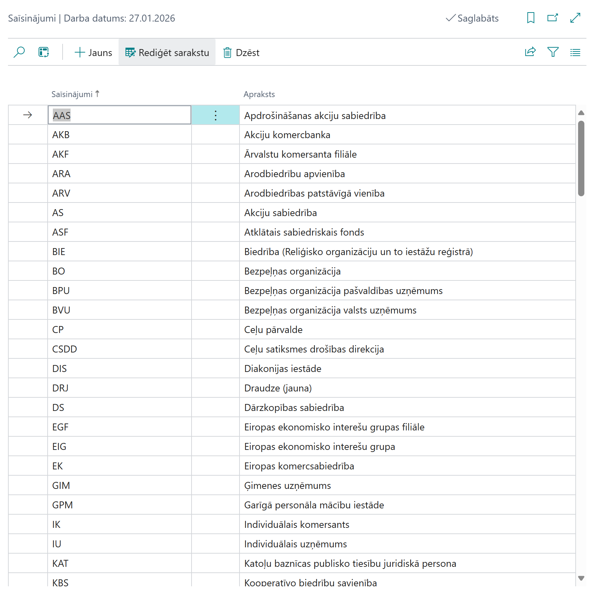
How to use
Requesting Lursoft client data
- Press the Search icon in the upper right corner of the page, enter Customers and select the appropriate link.
- In the list of customers, select the customer who needs to perform data restoration from Lursoft and open the corresponding Customer Card.
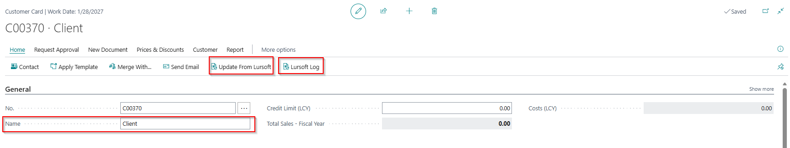
- Request Lursoft data by clicking Update from Lursoft;
- Perform a review of the previously requested data by clicking Lursoft log;
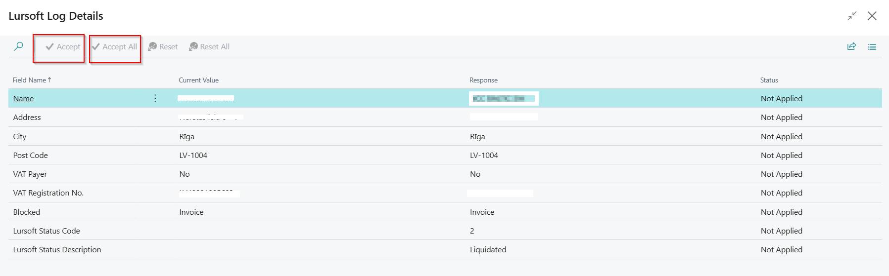
- Review and confirm the data received from Lursoft on the page Lursoft Log Details:
- Name - indicates the name of the client;
- Address - indicates the customer's address information;
- City - indicates the city of the client;
- Post code - indicates the postal code of the customer;
- VAT registration number - indicates the VAT registration number of the customer;
- Blocked - specifies the value of the customer's Status field on the Customer card;
- Lursoft status code - indicates the received status value from Lursoft;
- Lursoft status description - indicates the description of the received status value from Lursoft.
- After fulfilling the Lurosft request, confirm the data on the page Lursoft Log Details, which will be further replaced in the corresponding fields of the Customer Card;
- Review Lursoft data on the page Customer card on the tab General information in the group Lurosft:
- Last Lursoft Update DateTime - indicates when the data from Lurosft was last updated;
- Lursoft Customer Org. Status Code - denotes what is the status of a given client in the Lurosft system;
- Lursoft Cust. Status description - denotes what description or explanation of the given client's status is in the Lurosft system;
- Lursoft VAT Payer - indicates whether the customer is a VAT payer;
- Lursoft Skip Customer name - it should be noted whether you want to restore and replace the client's name with the name received from Lursoft's data.
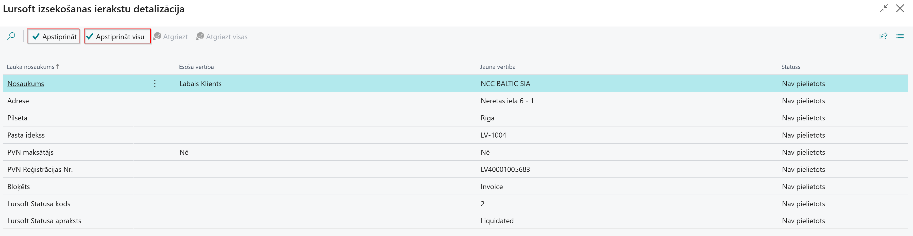
Requesting Lursoft customer data from a sales order
- Press the Search icon in the upper right corner of the page, enter Sales Orders and select the appropriate link.
- In the list of sales orders, select the order for which you need to request customer data from Lursoft and open the corresponding Sales order.
- Request Lursoft data by clicking Update From Lursoft;
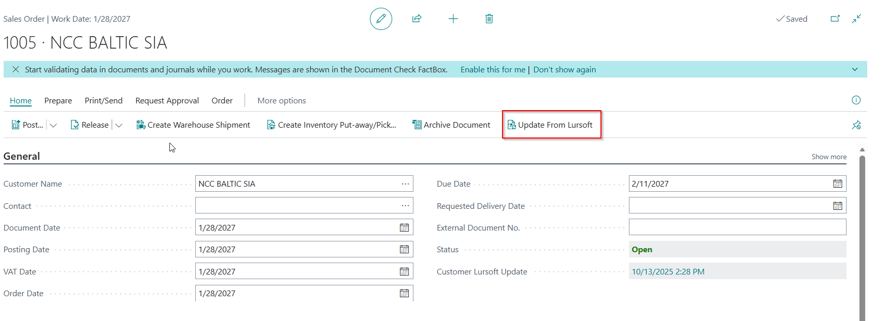
- Review and confirm the data received from Lursoft on the page Lursoft Log Details;
- After fulfilling the Lurosft request, the confirmed data on the page Lursoft Log Details, which will also be replaced in the corresponding data fields of the Customer Card;
- Upon Lurosft's request, the date and time of the request will also be updated on the Sales order field in the Customer Lurosft Update field**:

- From the page Sales order in Lursoft, request and update data only once a day, the more it is not allowed.
Lursoft Requesting Vendor Data
- Press the Search icon in the upper right corner of the page, enter Vendors and select the appropriate link.
- In the list of vendors, select the vendor who needs to perform data restoration from Lursoft and open the corresponding Vendor Card.
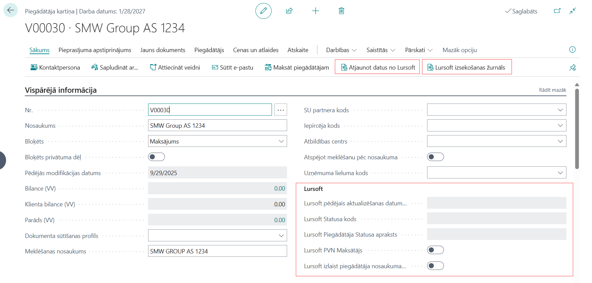
- Request Lursoft data by clicking Update from Lursoft;
- Perform a review of the previously requested data by clicking Lursoft log;
- Review and confirm the data received from Lursoft on the page Lursoft Log Details:
- Name - indicates the name of the vendor;
- Address - indicates the address information of the vendor;
- City - indicates the city of the vendor;
- Postal code - indicates the postal code of the vendor;
- VAT registration No. - indicates the VAT registration number of the vendor;
- Blocked - specifies the value of the Vendor Status field on the Vendor card;
- Lursoft Status Code - indicates the received status value from Lursoft;
- Lursoft Status Description - indicates the description of the received status value from Lursoft.
After fulfilling the Lurosft request, confirm the data on the page Lursoft Log Details, which will also be replaced in the corresponding fields of the Vendor's card;
Review the Lursoft data on the Vendor Card page on the General tab in the Lurosft group**:
- Last Lursoft Update Date Time - indicates when the data from Lurosft was last updated;
- Lursoft Vendor Org. Status Code - denotes what is the status of a given vendor in the Lurosft system;
- Lursoft Vendor Status description - denotes what is the description or explanation of the status of the given vendor in the Lurosft system;
- Lursoft VAT Payer - indicates whether the vendor is a VAT payer;
- Lursoft Skip Vendor Name - it should be noted whether you want to restore and replace the vendor's name with the name received from Lursoft's data.
Requesting Lursoft vendor data from a purchase order
- Press the Search icon in the upper right corner of the page, enter Purchase orders and select the appropriate link.
- In the list of procurement orders, select an order for which you need to request vendor data from Lursoft and open the corresponding purchase order.
- Request Lursoft data by clicking Update From Lursoft;
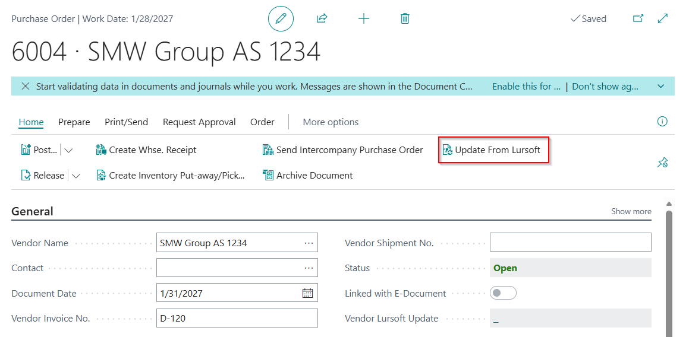
- Review and confirm the data received from Lursoft on the page Lursoft Log Details;
- After fulfilling the Lurosft request, confirm the data on the page Lursoft Log Details, which will also be replaced in the corresponding data fields of the Vendor Card;
- After fulfilling the Lurosft request, the data on the Purchase order field in the Vendor Lurosft Update field will also be updated:
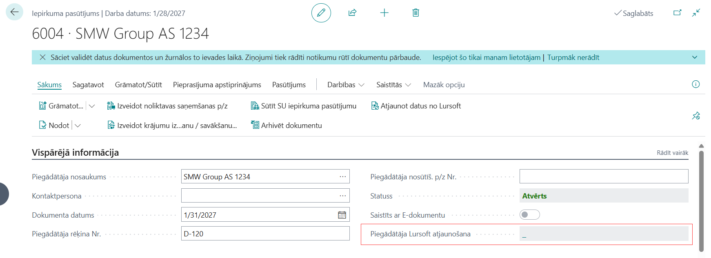
- From the page Procurement order Lursoft data request and update only once a day, more it is not allowed.
Lursoft tracking log
- Press the Search icon in the upper right corner of the page, enter Lursoft tracking log and select the appropriate link.
- The page Lursoft tracking log shows the entire history of making Lursoft requests, which is presented as follows:
- Entry No - indicates the sequential internal list numbering of the request;
- Account type - indicates for which Lursoft data request was made (Customer or Vendor);
- Account No. - indicates the accounting number of a particular customer or vendor in the system;
- Registration No. - indicates the Registration No. of the particular customer or vendor with which the Lursoft data request was made;
- Valts code - indicates the country code in which state register the Lursoft request was made;
- User ID - indicates the user ID who made the Lurosft data request;
- Date, time of the request - indicates the date and time of execution of the Lursoft request.
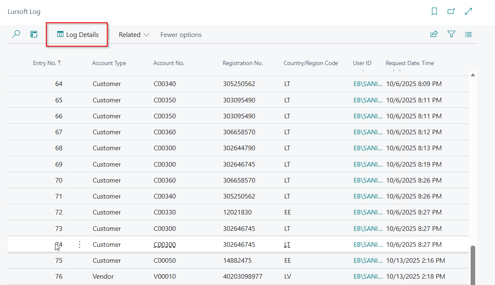
- In the Lursoft tracking log select the corresponding entry from the list and perform a detail review by pressing the Tracking record detailing button:
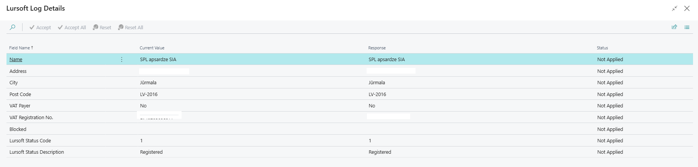
- To delete history entries in the Lursoft tracking log select the corresponding entry from the list and perform the action Related and Delete:
- Delete current record - execute if you want to delete a specific Lurosft request tracking record;
- Delete all records - execute if you want to delete all Lurosft request tracking records;
- Delete records older than 30 days - follow if you want to delete all Lurosft request tracking records, older than 30 days;
- Delete records older than 90 days - follow this if you want to delete all Lurosft request tracking records older than 90 days.
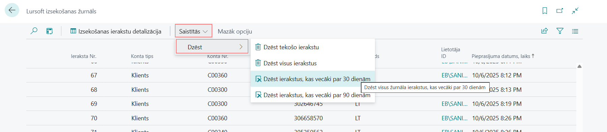